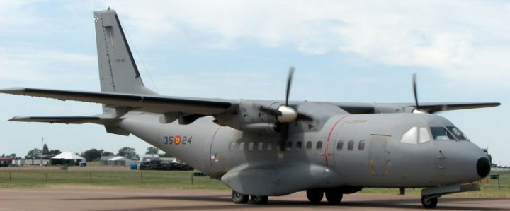

Milli Savunma Bakanlýðý (MSB) verilerine göre Türkiye, savunma ürünleri ithalatý açýsýndan dünya ülkeleri arasýnda 3'üncü sýradayken; 2006 yýlýnda 11'inci sýraya düþtü. Ýhraç eden ülkeler arasýnda ise Türkiye 2002'de 31'inci sýradayken; 2006'da 21'inci sýraya yükseldi.
Soðuk savaþ döneminin 1990'lý yýllarýn baþýnda sona ermesinin ardýndan Türkiye'nin savunma ve güvenlik ihtiyaçlarýnýn NATO ittifakýna dayanan temel varsayýmlarý, deðiþime uðrayarak ülkemize özgü ihtiyaçlar ön plana çýkmaya baþladý. Türkiye, savunma sanayiinde yeni projeler üreterek ithalattan ihracata geçti.
MSB'nin 2009 yýlý bütçesi 14 milyar 532 milyon TL. Bu bütçenin yüzde 42,5'ini personel giderleri, yüzde 6,2'sini sosyal güvenlik kurumlarýna devlet primi giderleri, yüzde 49,2'sini mal ve hizmet alým giderleri, yüzde 1,2'sini tedavi giderleri, yüzde 0,6'sýný cari transferler ve yüzde 0,3'ünü de sermaye giderleri oluþturuyor.
Türkiye'de savunma sanayiini geliþtirme çabalarý, aðýrlýkla 1974 Kýbrýs ambargosundan sonra bir politika olarak þekillenmeye baþladý. Artýk, her türlü zýrhlý araçlar, deniz araçlarýnýn çoðunluðu, komuta kontrol sistemleri, elektronik harp sistemleri, atýþ kontrol sistemleri, haberleþme sistemleri, gözetleme sistemleri ve belirli güdümlü silahlar milli imkanlarla tasarlanýp Türk Silahlý Kuvvetleri'nin kullanýmýna veriliyor. Bu ürünlerde ciddi ihracat baþarýlarý da saðlanmaya baþlandý. Hazýr alýma ise son alternatif olarak ve mutlaka yerli katký þartlarý ile baþvuruluyor. Bu kapsamdaki projeler çerçevesinde de tedarik için harcanan kaynaðýn milli sanayie nitelikli iþ payý olarak dönmesi ve önemli bir iþ payýnýn Türkiye'de gerçekleþtirilmesi öncelikli talepler arasýnda.
Uygulanan bu politikalar sayesinde, savunma sanayiinin toplam cirosu 2001 yýlýndan 2006 yýlýna kadar yüzde 113 oranýnda arttý. 2007 yýlýnda da ayný artýþ eðilimi devam etti. 2002 verilerine göre Türkiye, savunma ürünleri ithalatý açýsýndan dünya ülkeleri arasýnda 3'üncü sýradayken; 2006 yýlýnda 11'inci sýraya düþtü. Türkiye savunma sanayii ürünü ihraç eden ülkeler arasýnda 2002 yýlýnda 31'inci sýradayken; 2006 yýlýnda 21'inci sýraya yükseldi.

CASA CN-235 Nakliye Uçaðý pilotlarýna, gerçek ortamda uçuþ eðitimleri, hava radar eðitimi ve acil durum eðitimleri saðlamak maksadýyla, HAVELSAN tarafýndan geliþtirilen Tam Uçuþ Simülatörünün tasarýmý, yazýlýmý, entegrasyonu ve testi tamamlanarak 30 milyon ABD dolarýna Güney Kore'ye satýldý.
144 savunma projesi devam ediyor
2007-2016 döneminde; milli bütçeden karþýlanan toplam 44 adet Savunma Araþtýrma Geliþtirme Teknoloji Programý (SAGTEPR) Ar-Ge Projesi ile kaynaðý TÜBÝTAK Baþkanlýðý bütçesinden karþýlanmakta olan 100 adet TÜBÝTAK Destekli Savunma ve Uzay Ar-Ge Projesi; TÜBÝTAK, üniversiteler ve sanayi kuruluþlarý ile birlikte yürütülüyor.
Savunma Sanayii Müsteþarlýðý tarafýndan son yýllarda baþlatýlan ve yerli geliþtirme öngörülen bütün ana sistem projelerinde ana müteahhitler olan savunma sanayii þirketlerine projelerin en az yüzde 50'sini yan sanayie vermeleri mecburiyeti getirildi. Ýlk defa geliþmiþ Çift Pilotlu Temel Eðitim Uçaðýnýn tasarýmý TUSAÞ'ta yapýlýyor. 2005 yýlýnda baþlatýlan projede uçaðýn ilk uçuþunu 2009 yýlýnda gerçekleþtirmesi ve 2011 yýlýnda teslim edilmesi planlanýyor.
Çift Pilotlu Temel Eðitim Uçaðý
Envanterdeki F-16 uçaklarýnýn modern mühimmat, elektronik harp ve geliþmiþ aviyonik sistemler ile modernize edilmesi için 2005 yýlýnda imzalanan projelerin 2014 yýlýnda tamamlanmasý hedefleniyor. Proje kapsamýnda test ve prototip uçaklarýnýn modifikasyonu TUSAS'ta gerçeklestirilecek. Ayrýca, ASELSAN ve MÝKES firmalarýnca geliþtirilen "Modern Elektronik Harp Sisteminin Entegrasyonu" TUSAÞ'ta yapýlacak.
2003 yýlýnda sözleþmesi imzalanan A400M Modern Ulaþtýrma Uçaðý Geliþtirme Projesi'nde, konsorsiyum kapsamýnda üretilecek olan 180 uçaðýn tamamýnýn orta gövde ve bazý alt sistemlerinin tasarým ve imalatýndan TUSAÞ sorumlu olup, ilk orta gövde teslimatýný baþarýyla tamamladý. Proje kapsamýnda ilk uçak teslimatýnýn 2010 yýlýnda gerçekleþtirilmesi planlanýyor.
2005 yýlýnda baþlatýlan ve HAVELSAN ana yükleniciliðinde yürütülen Helikopter Simülatörleri Projesi ile tamamen yerli imkanlar ile geliþtirilecek simülatörler üzerinde pilotlarýn Sikorsky helikopterlerinde intibak, tazeleme, harbe hazýrlýk eðitimleri yapýlacak.
2005 yýlýnda baþlatýlan Yeni Tip Karakol Botu Projesinde ise botlarýn ilk kez tamamen yerli imkanlarla tasarlanmasý ve inþa edilmesi planlanýyor. (CÝHAN)
Nüfuz edici bombalar geliyor
Her türlü sýðýnak ve korugana karþý kullanýlacak ''nüfuz edici'' yeni tip bomba üretimiyle ilgili araþtýrma-geliþtirme (Ar-Ge) çalýþmalarý baþlatýldý.
Edinilen bilgiye göre, bombalarýn tasarým sorumluluðu Türkiye Bilimsel ve Teknik Araþtýrma Kurumu-Savunma Sanayii Araþtýrma ve Geliþtirme Enstitüsü (TÜBÝTAK-SAGE), alt yükleniciliðini ise Makina ve Kimya Endüstrisi Kurumu (MKEK) yapacak.
Türk Hava Kuvvetleri Komutanlýðý için üretimi planlanan ve ''nüfuz edici bomba'' olarak tanýmlanan yeni tip bombalarýn üretimi, MKEK tesislerinde gerçekleþtirilecek.
Her türlü sýðýnak ve koruganýn imhasý amacýyla geliþtirilmesi planlanan nüfuz edici bomba projesinde ilk adým MKEK ile TÜBÝTAK-SAGE arasýnda geçtiðimiz günlerde ''alt yükleniciliði'' sözleþmesinin imzalanmasýyla atýldý. Sözleþme gereði üretilecek yeni tip bombalarýn tasarým sorumluluðunu TÜBÝTAK-SAGE, üretimi ise MKEK'e tesislerde yapýlacak.
Araþtýrma-Geliþtirme safhasý çalýþmalarýnýn tamamlanmasýndan sonra, sonra söz konusu proje MKEK'in yatýrým programýna alýnacak. Nüfuz edici bombalarý üretimiyle ilgili tesislerin üretim kapasitesi, maliyeti, Ar-Ge çalýþmalarýnýn tamamlanmasýndan sonra netlik kazanacak.
Kaynaklar:
|